山城在扫扫看
山城在扫扫看最近看大家在讨论这个6的变化，我把自己的一些研究，贴出来和大家一起分享：
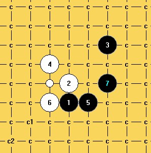
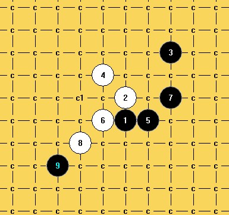
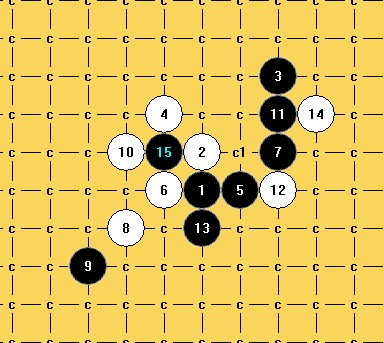
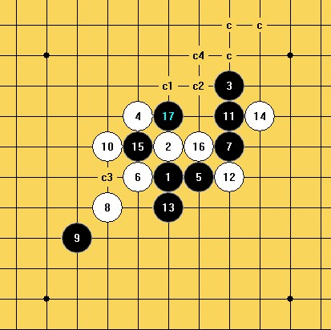
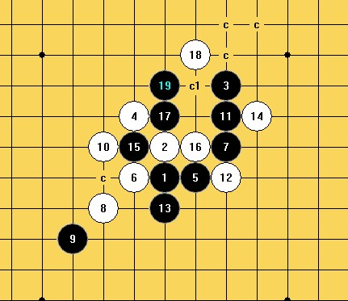
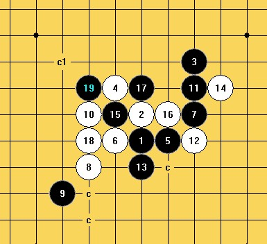
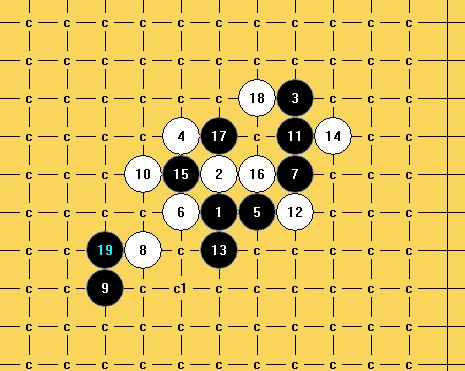
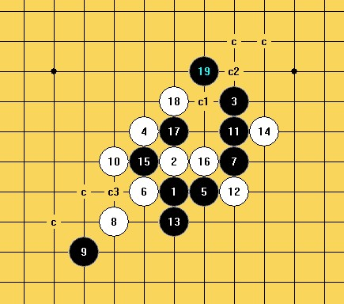
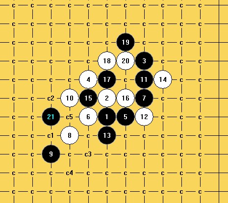
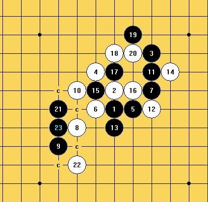
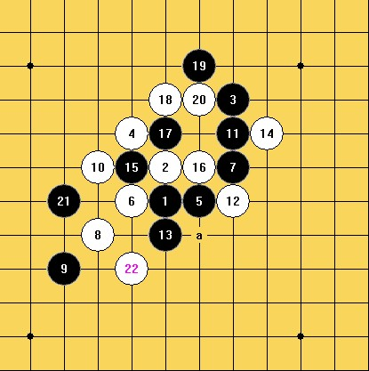
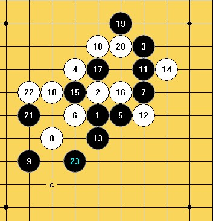
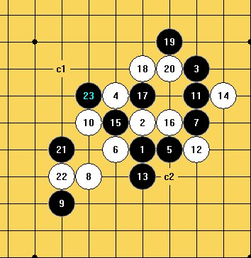
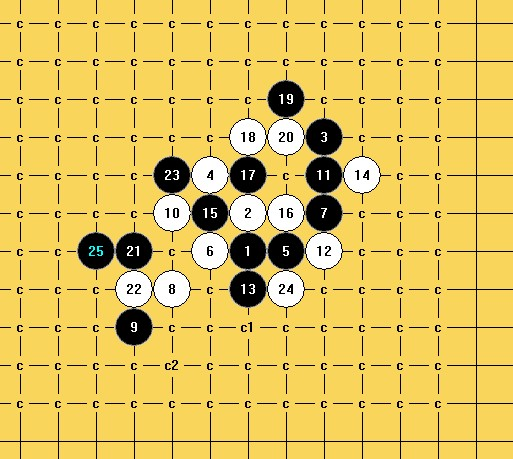
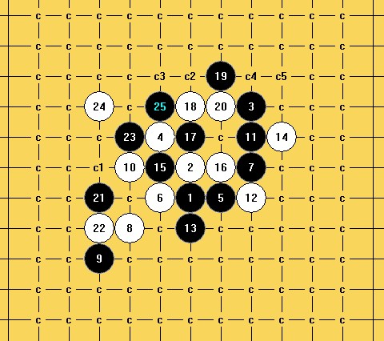
未解决8的变化：
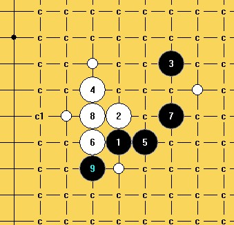
［此帖子已被 山城刀客 在 2012-4-9 23:40:59 编辑过］
［ 冰雪笑醉 于 2012-4-10 8:04:39 时花20金币送鲜花一朵］
［ 冰雪笑醉 于 2012-4-10 8:04:41 时花20金币送鲜花一朵］
［ 冰雪笑醉 于 2012-4-10 8:04:42 时花20金币送鲜花一朵］
［ 逆刃 于 2012-4-10 8:57:35 时奖励此帖[金币加 100 威望加1］
［ 小小亦默 于 2012-4-10 17:35:30 时花20金币送鲜花一朵］
［ O民 于 2012-4-11 10:22:51 时花20金币送鲜花一朵］
［ 郎情 于 2012-6-25 2:50:50 时花20金币送鲜花一朵］
［ 郎情 于 2012-6-25 2:53:05 时花20金币送鲜花一朵］
前天偶下过这个
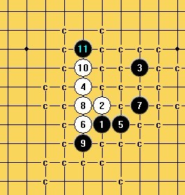
山城在扫扫看
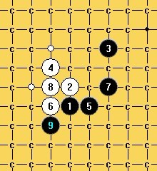
［ 山城刀客 于 2012-4-10 15:06:54 时花20金币送鲜花一朵］
［ 山城刀客 于 2012-4-10 15:08:53 时花20金币送鲜花一朵］
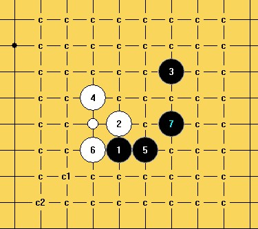
附上棋谱：
 外溪月一个6的变化.part001.rar外溪月一个6的变化.part002.rar外溪月一个6的变化.part003.rar外溪月一个6的变化.part004.rar外溪月一个6的变化.part005.rar外溪月一个6的变化.part006.rar
外溪月一个6的变化.part001.rar外溪月一个6的变化.part002.rar外溪月一个6的变化.part003.rar外溪月一个6的变化.part004.rar外溪月一个6的变化.part005.rar外溪月一个6的变化.part006.rar
棋谱没仔细查验，难免会有疏漏，望大家批评指正！
［此帖子已被 山城刀客 在 2012-4-10 15:33:41 编辑过］
［ 冰雪笑醉 于 2012-4-10 15:44:36 时花20金币送鲜花一朵］
［ 冰雪笑醉 于 2012-4-10 15:44:39 时花20金币送鲜花一朵］
［ 冰雪笑醉 于 2012-4-10 15:44:53 时奖励此帖[金币加 100 威望加1］
［ 与郎共五 于 2012-4-11 9:24:47 时花20金币送鲜花一朵］
［ 与郎共五 于 2012-4-11 9:25:24 时花20金币送鲜花一朵］
回楼上：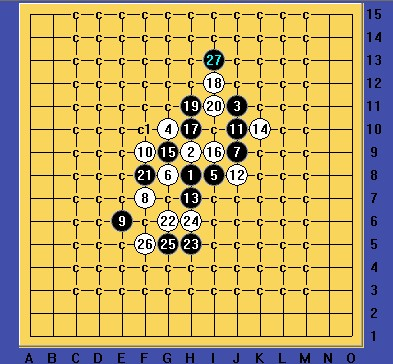
棋谱：
其他27不好杀出，再次感谢楼上提出问题！
［此帖子已被 山城刀客 在 2012-4-12 18:22:59 编辑过］